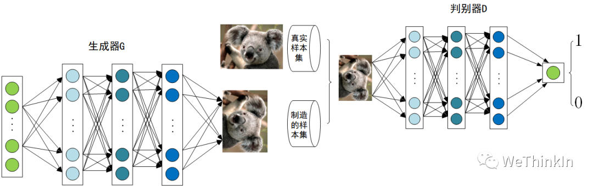
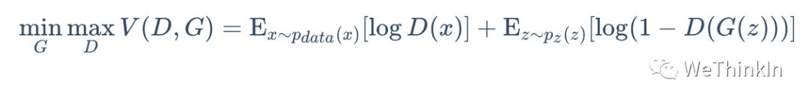
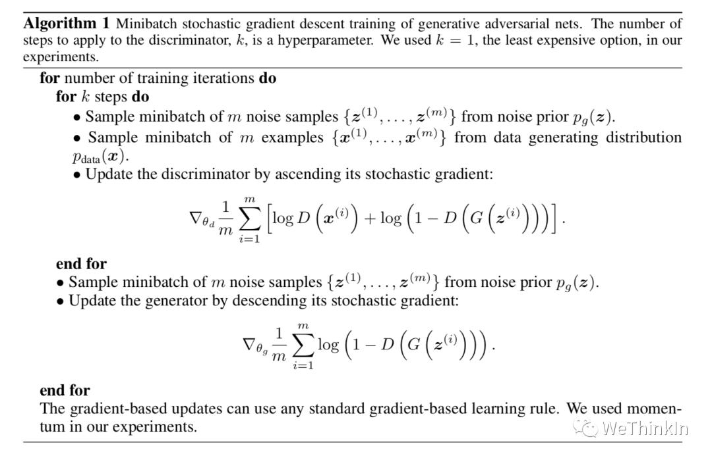

GAN模型基础
created: 2025-01-25T00:41 updated: 2025-01-26T02:20
目录
- 1.哪些经典的GAN模型跨过了周期，在AIGC时代继续落地使用？
- 2.GAN的损失函数推导
- 3.GAN的收敛性分析
- 4.GAN的缺陷
- 5.GAN的核心思想？
- 6.面试常问的经典GAN模型？
- 7.生成对抗网络GAN与传统神经网络有何不同？
1.哪些经典的GAN模型跨过了周期，在AIGC时代继续落地使用？
GAN作为传统深度学习时代的主流生成式模型，在AIGC时代到来后，终于“退居二线”，成为Stable Diffusion模型的得力助手。Rocky认为这是GAN最好也是最合适的落地方式，所以Rocky持续梳理总结了在AIGC时代继续繁荣的GAN模型，为大家指明GAN快速学习入门的新路线：
- GAN优化：原生GAN、DCGAN、CGAN、WGAN、LSGAN等
- 图像生成：bigGAN、GigaGAN等
- 图像风格迁移：CycleGAN、StyleGAN、StyleGAN2等
- 图像编辑：Pix2Pix、GauGAN、GauGAN2、DragGAN等
- 图像超分辨率重建：SRGAN、ESRGAN、Real-ESRGAN、AuraSR等
- 图像修复/人脸修复：GFPGAN等
2.GAN的损失函数推导
判别器用来识别数据是真实样本还是由生成器生成的模拟样本，使用交叉熵建立损失函数
$$ \begin{align} H(p,q) &= -\mathbb{E}{x\sim p\left(x\right)} \left[\log\left(q\left(x\right)\right)\right]= -\sum{x}p\left(x\right)\log\left(q\left(x\right)\right) = -\int\limits_{x}f\left(x\right)\log\left(q\left(x\right)\right) dx \end{align} $$ 由于这是一个二分类问题，其中D(x)表示判别器认为x为真实样本的概率，有
$$ \begin{align} L &= -\sum_{x} p\left(x\right)\log\left(q\left(x\right)\right)\ & = -p(x)\log [q(x)] - (1-p(x))log[1-q(x)]\ & = -p(x,data)\log [D(x)] - p(x,g)log[1-D(x)] \ & = -p(data)p(x\vert data)\log [D(x)] - p(g)p(x\vert g)log[1-D(x)] \ & = -\frac{1}{2}\left(p_{data}(x)\log [D(x)] + p_{g}(x)log[1-D(x)]\right) \ & = -\frac{1}{2}\left(\mathbb{E}{x\sim p(data)}\left[\log (D(x))\right] + \mathbb{E}{x\sim p(g)}\left[\log [1-D(x)]\right]\right) \ \end{align} $$ 在此基础上可以得到Gans的值函数
$$ V(G,D) = \mathbb{E}{x\sim p(data)}\left[\log (D(x))\right] + \mathbb{E}{x\sim p(g)}\left[\log (1-D(x))\right] $$ 训练判别器D时,最大化V，训练生成器时，最小化V，整个训练过程可以表示为
$$ \min_{G}\max_{D}V(G,D) $$ 给定生成器G，求当下最优判别器D，令V对D的导数等于零，即可求得最优判别器
$$ \max_{D}V(G,D) = \mathbb{E}{x\sim p(data)}\left[\log (D(x))\right] + \mathbb{E}{x\sim p(g)}\left[\log (1-D(x))\right]$ $D^{*}(x)=\frac{\mathrm{P}{data}(x)}{\mathrm{P}{data}(x)+\mathrm{P}{g}(x)} $$ 如今我们已经找到了最大化的D，现要将其固定，寻找最小化的G，即求下式： $$ \begin{align} \min{G}V(G,D) &= \mathbb{E}{x\sim p(data)}\left[\log (D(x))\right] + \mathbb{E}{x\sim p(g)}\left[\log (1-D(x))\right] \ &= \mathbb{E}{x\sim p(data)}\left[\log\frac{p{data}(x)}{p_{data}(x)+p_{g}(x)}\right] + \mathbb{E}{x\sim p(g)}\left[\log\frac{p{g}(x)}{p_{data}(x)+p_{g}(x)}\right] \ &= \mathbb{E}{x\sim p(data)}\left[\log\frac{\frac{1}{2}p{data}(x)}{\frac{1}{2}(p_{data}(x)+p_{g}(x))}\right] + \mathbb{E}{x\sim p(g)}\left[\log\frac{\frac{1}{2}p{g}(x)}{\frac{1}{2}(p_{data}(x)+p_{g}(x))}\right] \ &= KL(p_{data}(x)|\frac{p_{data}(x)+p_{g}(x)}{2}) + KL(p_{g}(x)|\frac{p_{data}(x)+p_{g}(x)}{2}) -2\log2 \ & = 2JS(p_{data}|p_{g}) - 2\log2 \end{align} $$
3.GAN的收敛性分析
优化判别器是在度量生成样本分布与真实样本分布的JS距离，优化生成器G实际是在最小化这个JS距离，当 $p_{data} = p_{g}$ 时G达到最优，此时$JS = 0$，最优解
$G^{}(x)= x \sim p_{data}(x)$， $D^{}(x)=\frac{1}{2}$， $V(G^{},D^{}) = -2\log2$
4.GAN的缺陷
根据原始GAN定义的判别器loss，我们可以得到最优判别器的形式；而在最优判别器下，我们可以把原始GAN定义的生成器loss等价变换为最小化真实分布与生成分布之间的JS散度。训练判别器是在度量生成器分布和真实数据分布的JS距离，训练生成器是在减小这个JS距离。 两个分布之间越接近它们的JS散度越小，我们通过优化JS散度就能将$p_{data}$ 拉向 $p_{g}$ 最终以假乱真。 看似合理，但问题就出在这个JS散度上。JS散度只有当两个分布有所重叠的时候才有意义，如果两个分布完全没有重叠的部分，或者它们重叠的部分可忽略，则它们的JS散度为一个固定的常数！ $$ \begin{align} J S\left(P_{1} | P_{2}\right)&=\frac{1}{2} K L\left(P_{1} | \frac{P_{1}+P_{2}}{2}\right)+\frac{1}{2} K L\left(P_{2} | \frac{P_{1}+P_{2}}{2}\right) \ &= \frac{1}{2} \mathbb{E}{x \sim p{1}(x)}\left[\log\frac{2p_{1}(x)}{p_{1}(x)+p_{2}(x)}\right] + \frac{1}{2} \mathbb{E}{x\sim p{2}(x)}\left[\log\frac{2p_{2}(x)}{p_{1}(x)+p_{2}(x)}\right] \ &= \frac{1}{2} \mathbb{E}{x \sim p{1}(x)}\left[\log\frac{p_{1}(x)}{p_{1}(x)+p_{2}(x)}\right] + \frac{1}{2} \mathbb{E}{x\sim p{2}(x)}\left[\log\frac{p_{2}(x)}{p_{1}(x)+p_{2}(x)}\right] + \log 2\ &= \frac{1}{2} \sum_{x}p_{1}(x)\left[\log\frac{p_{1}(x)}{p_{1}(x)+p_{2}(x)}\right] + \frac{1}{2} \sum_{x} p_{2}(x)\left[\log\frac{p_{2}(x)}{p_{1}(x)+p_{2}(x)}\right] + \log 2\ \end{align} $$
当两个分布不重合时，对于任意一点x，必有一分布在该点处概率为0，无论x取何值，最终计算出的JS始终等于log2

既然这样，那么是否两个分布有重叠，JS就可以正常计算了？
其实不然，当 $p_{data}$ 与 $p_{g}$ 的支撑集（support）是高维空间中的低维流形（manifold）时， $p_{data}$ 与 $p_{g}$ 重叠部分测度（measure）为0的概率为1。
也就是说，当两个分布有重叠时，大概率也是可以忽略不计的重叠，这时的JS值依然是log2
- 支撑集（support）其实就是函数的非零部分子集，比如ReLU函数的支撑集就是，一个概率分布的支撑集就是所有概率密度非零部分的集合。
- 流形（manifold）是高维空间中曲线、曲面概念的拓广，我们可以在低维上直观理解这个概念，比如我们说三维空间中的一个曲面是一个二维流形，因为它的本质维度（intrinsic dimension）只有2，一个点在这个二维流形上移动只有两个方向的自由度。同理，三维空间或者二维空间中的一条曲线都是一个一维流形。
- 测度（measure）是高维空间中长度、面积、体积概念的拓广，可以理解为“超体积”。
GAN中的生成器一般是从某个低维（比如100维）的随机分布中采样出一个编码向量，再经过一个神经网络生成出一个高维样本（比如64x64的图片就有4096维）。当生成器的参数固定时，生成样本的概率分布虽然是定义在4096维的空间上，但它本身所有可能产生的变化已经被那个100维的随机分布限定了，其本质维度就是100，再考虑到神经网络带来的映射降维，最终可能比100还小，所以生成样本分布的支撑集就在4096维空间中构成一个最多100维的低维流形，“撑不满”整个高维空间。
高维空间中不是每个点都能表达一个样本（图片），空间中大部份是多余的，真实数据蜷缩在低维子空间的流形上（高维曲面），因为维度比整个空间低，所占空间的体积几乎为零，像一张薄纸飘在三维空间，不仔细看很难发现。
“撑不满”就会导致真实分布与生成分布难以“碰到面”，这很容易在二维空间中理解：一方面，二维平面中随机取两条曲线，它们之间刚好存在重叠线段的概率为0；另一方面，虽然它们很大可能会存在交叉点，但是相比于重合的曲线而言，交叉点比曲线低一个维度，长度（测度）为0，可忽略。三维空间中也是类似的，随机取两个曲面，它们之间最多就是比较有可能存在交叉线，但是交叉线比曲面低一个维度，面积（测度）是0，可忽略。
从低维空间拓展到高维空间，就有了如下逻辑：因为一开始生成器随机初始化，所以两个分布之间几乎不可能有什么关联，所以它们的支撑集之间的重叠部分要么不存在，要么就比最小维度还要低至少一个维度，因此重叠部份测度为0，从而分布之间重叠的部分可以忽略
在最优判别器下，求最优生成器即为最小化生成器的loss，等价于最小化 $p_{data}$ 与 $p_{g}$ 之间的JS散度，而由于 $p_{data}$ 与 $p_{g}$ 的要么没有重叠要么重叠部分测度为0，所以无论它们相距多远JS散度都是常数，最终导致生成器的梯度为0，导致梯度消失。


5.GAN的核心思想？
2014年，Ian Goodfellow第一次提出了GAN的概念。Yann LeCun曾经说过:“生成对抗网络及其变种已经成为最近10年以来机器学习领域最为重要的思想之一”。GAN的提出让生成式模型重新站在了深度学习这个浪潮的璀璨舞台上，与判别式模型开始谈笑风生。
GAN由生成器$G$和判别器$D$组成。其中，生成器主要负责生成相应的样本数据，输入一般是由高斯分布随机采样得到的噪声$Z$。而判别器的主要职责是区分生成器生成的样本与$gt（GroundTruth）$样本，输入一般是$gt$样本与相应的生成样本，我们想要的是对$gt$样本输出的置信度越接近$1$越好，而对生成样本输出的置信度越接近$0$越好。与一般神经网络不同的是，GAN在训练时要同时训练生成器与判别器，所以其训练难度是比较大的。

在提出GAN的第一篇论文中，生成器被比喻为印假钞票的犯罪分子，判别器则被当作警察。犯罪分子努力让印出的假钞看起来逼真，警察则不断提升对于假钞的辨识能力。二者互相博弈，随着时间的进行，都会越来越强。在图像生成任务中也是如此，生成器不断生成尽可能逼真的假图像。判别器则判断图像是$gt$图像，还是生成的图像。二者不断博弈优化，最终生成器生成的图像使得判别器完全无法判别真假。
GAN的对抗思想主要由其目标函数实现。具体公式如下所示：

上面这个公式看似复杂，其实不然。跳出细节来看，整个公式的核心逻辑其实就是一个min-max问题，深度学习数学应用的边界扩展到这里，GAN便开始发光了。
接着我们再切入细节。我们可以分两部分开看这个公式，即判别器最小化角度与生成器最大化角度。在判别器角度，我们希望最大化这个目标函数，因为在公示第一部分，其表示$gt$样本$（x ～Pdata）$输入判别器后输出的置信度，当然是越接近$1$越好。而公式的第二部分表示生成器输出的生成样本$（G(z)）$再输入判别器中进行进行二分类判别，其输出的置信度当然是越接近$0$越好，所以$1 - D(G(z))$越接近$1$越好。
在生成器角度，我们想要最小化判别器目标函数的最大值。判别器目标函数的最大值代表的是真实数据分布与生成数据分布的JS散度，JS散度可以度量分布的相似性，两个分布越接近，JS散度越小（JS散度是在初始GAN论文中被提出，实际应用中会发现有不足的地方，后来的论文陆续提出了很多的新损失函数来进行优化）
写到这里，大家应该就明白GAN的对抗思想了，下面是初始GAN论文中判别器与生成器损失函数的具体设置以及训练的具体流程：

在图中可以看出，将判别器损失函数离散化，其与交叉熵的形式一致，我们也可以说判别器的目标是最小化交叉熵损失。
6.面试常问的经典GAN模型？
- 原始GAN及其训练逻辑
- DCGAN
- CGAN
- WGAN
- LSGAN
- PixPix系列
- CysleGAN
- SRGAN系列
7.生成对抗网络GAN与传统神经网络有何不同？
生成对抗网络（GAN）的定义
- 生成对抗网络（Generative Adversarial Network，GAN）是一种深度学习架构，由生成器（Generator）和判别器（Discriminator）两个部分组成。
- 生成器的主要任务是学习数据的分布，并生成尽可能逼真的数据来欺骗判别器。例如，它可以学习人脸图像的数据分布，然后生成新的人脸图像。生成器接收一个随机噪声向量（通常是低维的）作为输入，通过一系列的神经网络层（如全连接层、卷积层等）将这个噪声转化为生成的数据样本。
- 判别器则用于区分真实数据和生成器生成的数据。它接收真实数据和生成数据作为输入，输出一个概率值，表示输入的数据是真实数据的概率。例如，对于一张图像，判别器会判断它是真实拍摄的人脸图像还是生成器生成的人脸图像，输出一个介于0到1之间的概率。
- 这两个部分在训练过程中相互对抗、相互学习。生成器试图让生成的数据尽可能地骗过判别器，而判别器则试图更好地分辨真实数据和生成数据，随着训练的进行，生成器生成的数据越来越逼真。
GAN与传统神经网络的不同点
- 网络结构
- 传统神经网络：通常是一个前馈网络（如多层感知机）或递归网络（如RNN、LSTM），主要用于完成分类、回归等任务。例如，在图像分类任务中，传统神经网络输入一张图像，通过一系列的卷积层和全连接层，最终输出图像所属的类别。它的结构相对比较单一，目的是学习输入到输出的映射关系。
- GAN：具有双模块结构，由生成器和判别器组成。这两个模块之间存在对抗关系，它们的训练过程是相互关联的。生成器的输出作为判别器的输入的一部分，两个模块的参数是交替更新的，而不是像传统神经网络那样只更新一个网络的参数。
- 训练目标
- 传统神经网络：训练目标比较直接。在监督学习的情况下，例如分类任务，训练目标是最小化预测类别与真实类别之间的交叉熵损失；在回归任务中，训练目标可能是最小化预测值与真实值之间的均方误差等。目标是使网络输出尽可能准确地符合给定的标签或目标值。
- GAN：训练目标是达到纳什均衡（Nash equilibrium）。生成器的目标是最小化生成数据被判别器识别为假数据的概率，即最大化判别器将生成数据判断为真实数据的概率；判别器的目标是最大化区分真实数据和生成数据的能力。这种对抗性的训练目标使得GAN的训练过程更加复杂和动态。
- 数据学习方式
- 传统神经网络：在监督学习中，依赖于带有标签的训练数据来学习输入和输出之间的映射关系。例如，在训练一个文本情感分类器时，需要大量的文本及其对应的情感标签（如正面、负面）来训练网络。在无监督学习的情况下，传统神经网络可能会学习数据的聚类等特征，但学习方式相对比较固定。
- GAN：通过生成器和判别器的对抗来学习数据的分布。生成器在没有直接看到真实数据标签的情况下，通过判别器的反馈来不断调整生成的数据，使其更接近真实数据的分布。例如，在生成手写数字图像的GAN中，生成器通过不断尝试生成能骗过判别器的手写数字图像，来学习真实手写数字图像的分布。
- 应用场景
- 传统神经网络：广泛应用于分类、回归、聚类、预测等领域。例如，在语音识别中，用于将语音信号转换为文本；在推荐系统中，用于预测用户对物品的喜好程度等。
- GAN：主要用于生成数据，如生成图像、音频、文本等。可以用于数据扩充，例如在医疗图像数据较少的情况下，通过GAN生成更多的类似图像来扩充数据集；还可以用于图像风格转换，如将真实照片转换为油画风格的图像等。